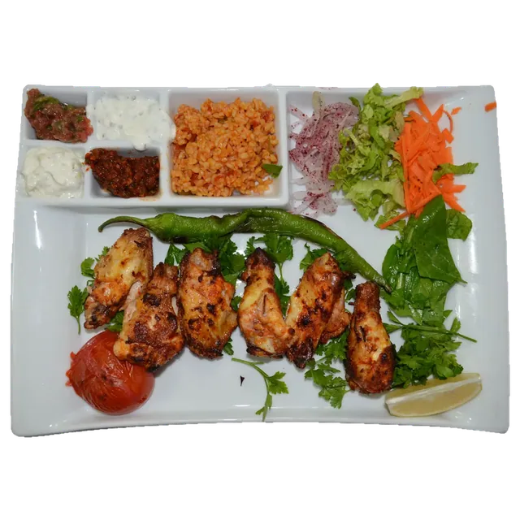
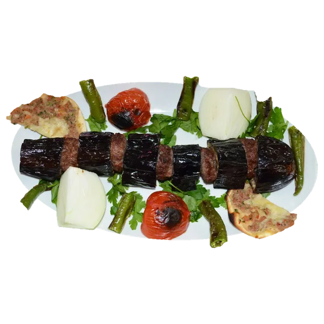
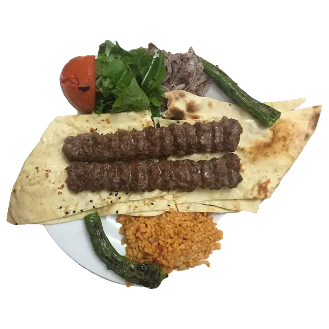
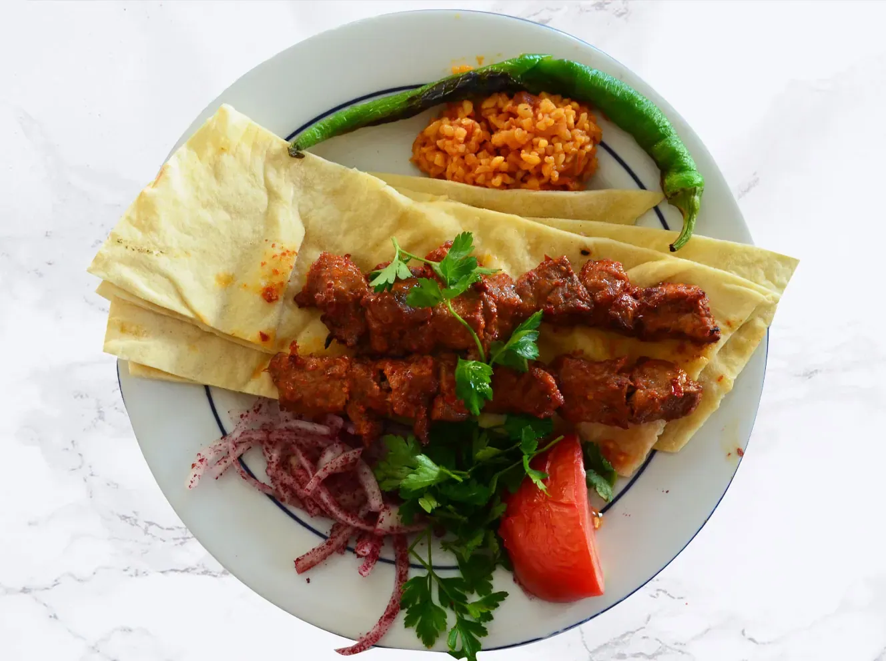
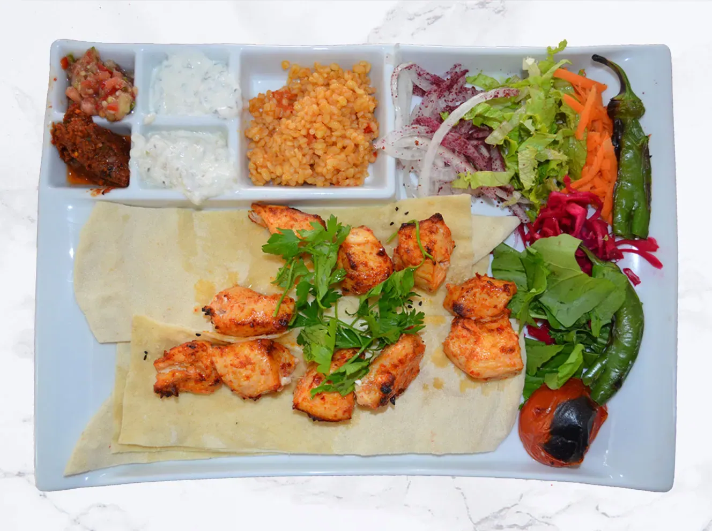

Kanat
490,00 TL
Eskişehir'de kebap ve pide
Kebaplar ve ızgaralar, sitedeki menüden.

490,00 TL

740,00 TL

530,00 TL
2003'ten beri kaliteden ve hizmetten ödün vermeden çalışıyoruz.
Evinize ya da işyerinize paket servis de yapıyoruz.
Saray Ocakbaşı
| Pazartesi | Kapalı |
|---|---|
| Salı | 09:00–22:00 |
| Çarşamba | 09:00–22:00 |
| Perşembe | 09:00–22:00 |
| Cuma | 09:00–22:00 |
| Cumartesi | 09:00–22:00 |
| Pazar | 09:00–22:00 |
Pazartesi günleri kapalıyız.
